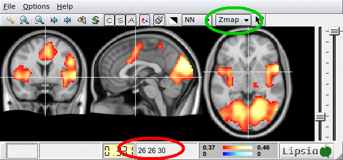

Make sure you select "zmap" coordinates (green circle). The location of the cross hair
is then displayed in voxel coordinates at the bottom (red circle).
Alternatively, a seed region (ROI) can be used. In this case, the average time course across all voxels in the ROI is computed and used as a reference. The seed region can be specified using either 'vledit' or 'vmaskedit'. All voxels with positive values are considered to be part of the ROI.
Three correlation metrics are implemented (pearson, spearman and mutual information) and can be selected using the parameter '-type'. Estimates of probability densities in mutual information are calculated using three bins. In addition, Kendall's tau distance is also implemented. The Kendall tau distance counts the number of pairwise disagreements between the reference time course and all other time courses.
Note that if subsequent statistical t-tests are planned, the correlations should be transformed using Fisher's r-to-z transform for ensure Gaussianity. This can be done by setting '-type r2z'. Below is an example.
Max Planck Institute for Human Cognitive and Brain Sciences. Further Information:
lipsia@cbs.mpg.de